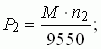
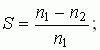
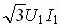

Задание 3. По данным моделирования процессов в АД рассчитать полезную мощность P2 на валу, скольжение S, коэффициент мощности cosφ и КПД η двигателя при разных нагрузках, воспользовавшись следующими расчётными формулами:
  η = Р2/Р1; cosφ = Р1/,
где Р2 - полезная механическая мощность на валу двигателя, кВт; М - момент вращения асинхронного двигателя, Нм; n2 - частота вращения ротора АД, об/мин; U1 - линейное напряжение сети, В; I1 - линейный ток двигателя, А. Результаты расчётов занести в табл. 19.2.
Примечание. Значения скольжения S, коэффициента мощности cosφ и КПД η асинхронного двигателя при разных нагрузках выводятся на экран дисплея. Однако, нужно твердо знать формулы их расчета.
По результатам вычислительного эксперимента и расчётов (см. табл. 19.2) построить (в любом редакторе или вручную в отчете) механическую n2 = f(M) (см. рис. 19.4) и рабочие характеристики АД (совместив их в одних координатных осях, вычерчивая для каждой величины свою ось ординат, см. рис. 19.6): I1(Р2), cosφ(Р2), S(Р2), Р1(Р2), M(Р2), η(Р2); сохранить их в электронном виде как рис. 2.